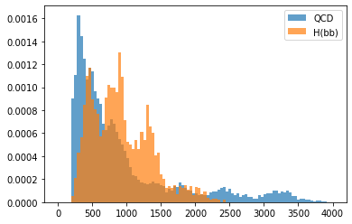
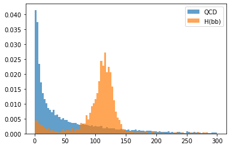
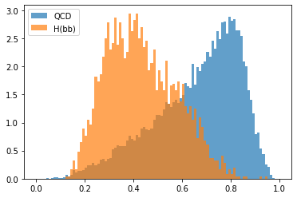

Week 2: Data Formats and Exploration¶
import uproot
f = uproot.open('root://eospublic.cern.ch//eos/opendata/cms/datascience/HiggsToBBNtupleProducerTool/HiggsToBBNTuple_HiggsToBB_QCD_RunII_13TeV_MC/train/ntuple_merged_10.root')
tree = f['deepntuplizer/tree']
tree.show()
Delta_gen_pt (no streamer) asdtype('>f4')
event_no (no streamer) asdtype('>u4')
gen_pt (no streamer) asdtype('>f4')
isB (no streamer) asdtype('>i4')
isBB (no streamer) asdtype('>i4')
isC (no streamer) asdtype('>i4')
isG (no streamer) asdtype('>i4')
isLeptonicB (no streamer) asdtype('>i4')
isLeptonicB_C (no streamer) asdtype('>i4')
isS (no streamer) asdtype('>i4')
isUD (no streamer) asdtype('>i4')
isUndefined (no streamer) asdtype('>i4')
jet_corr_pt (no streamer) asdtype('>f4')
jet_eta (no streamer) asdtype('>f4')
jet_looseId (no streamer) asdtype('>f4')
jet_no (no streamer) asdtype('>u4')
jet_phi (no streamer) asdtype('>f4')
jet_pt (no streamer) asdtype('>f4')
jet_tightId (no streamer) asdtype('>f4')
npv (no streamer) asdtype('>f4')
ntrueInt (no streamer) asdtype('>f4')
pfBoostedDoubleSecondaryVertexAK8BJetTags
(no streamer) asdtype('>f4')
pfCombinedInclusiveSecondaryVertexV2BJetTags
(no streamer) asdtype('>f4')
pfCombinedMVAV2BJetTags (no streamer) asdtype('>f4')
pfDeepCSVJetTags_probb (no streamer) asdtype('>f4')
pfDeepCSVJetTags_probbb (no streamer) asdtype('>f4')
pfDeepCSVJetTags_probc (no streamer) asdtype('>f4')
pfDeepCSVJetTags_probcc (no streamer) asdtype('>f4')
pfDeepCSVJetTags_probudsg (no streamer) asdtype('>f4')
pfJetBProbabilityBJetTags (no streamer) asdtype('>f4')
pfJetProbabilityBJetTags (no streamer) asdtype('>f4')
rho (no streamer) asdtype('>f4')
softPFElectronBJetTags (no streamer) asdtype('>f4')
softPFMuonBJetTags (no streamer) asdtype('>f4')
fj_doubleb (no streamer) asdtype('>f4')
fj_eta (no streamer) asdtype('>f4')
fj_gen_eta (no streamer) asdtype('>f4')
fj_gen_pt (no streamer) asdtype('>f4')
fj_isBB (no streamer) asdtype('>i4')
fj_isH (no streamer) asdtype('>i4')
fj_isNonBB (no streamer) asdtype('>i4')
fj_isQCD (no streamer) asdtype('>i4')
fj_isTop (no streamer) asdtype('>i4')
fj_isW (no streamer) asdtype('>i4')
fj_isZ (no streamer) asdtype('>i4')
fj_jetNTracks (no streamer) asdtype('>f4')
fj_label (no streamer) asdtype('>i4')
fj_labelJMAR (no streamer) asdtype('>i4')
fj_labelLegacy (no streamer) asdtype('>i4')
fj_mass (no streamer) asdtype('>f4')
fj_nSV (no streamer) asdtype('>f4')
fj_n_sdsubjets (no streamer) asdtype('>f4')
fj_nbHadrons (no streamer) asdtype('>i4')
fj_ncHadrons (no streamer) asdtype('>i4')
fj_phi (no streamer) asdtype('>f4')
fj_pt (no streamer) asdtype('>f4')
fj_ptDR (no streamer) asdtype('>f4')
fj_relptdiff (no streamer) asdtype('>f4')
fj_sdmass (no streamer) asdtype('>f4')
fj_sdn2 (no streamer) asdtype('>f4')
fj_sdsj1_axis1 (no streamer) asdtype('>f4')
fj_sdsj1_axis2 (no streamer) asdtype('>f4')
fj_sdsj1_csv (no streamer) asdtype('>f4')
fj_sdsj1_eta (no streamer) asdtype('>f4')
fj_sdsj1_mass (no streamer) asdtype('>f4')
fj_sdsj1_mult (no streamer) asdtype('>f4')
fj_sdsj1_phi (no streamer) asdtype('>f4')
fj_sdsj1_pt (no streamer) asdtype('>f4')
fj_sdsj1_ptD (no streamer) asdtype('>f4')
fj_sdsj2_axis1 (no streamer) asdtype('>f4')
fj_sdsj2_axis2 (no streamer) asdtype('>f4')
fj_sdsj2_csv (no streamer) asdtype('>f4')
fj_sdsj2_eta (no streamer) asdtype('>f4')
fj_sdsj2_mass (no streamer) asdtype('>f4')
fj_sdsj2_mult (no streamer) asdtype('>f4')
fj_sdsj2_phi (no streamer) asdtype('>f4')
fj_sdsj2_pt (no streamer) asdtype('>f4')
fj_sdsj2_ptD (no streamer) asdtype('>f4')
fj_tau0_trackEtaRel_0 (no streamer) asdtype('>f4')
fj_tau0_trackEtaRel_1 (no streamer) asdtype('>f4')
fj_tau0_trackEtaRel_2 (no streamer) asdtype('>f4')
fj_tau1 (no streamer) asdtype('>f4')
fj_tau1_trackEtaRel_0 (no streamer) asdtype('>f4')
fj_tau1_trackEtaRel_1 (no streamer) asdtype('>f4')
fj_tau1_trackEtaRel_2 (no streamer) asdtype('>f4')
fj_tau2 (no streamer) asdtype('>f4')
fj_tau21 (no streamer) asdtype('>f4')
fj_tau3 (no streamer) asdtype('>f4')
fj_tau32 (no streamer) asdtype('>f4')
fj_tau_flightDistance2dSig_0
(no streamer) asdtype('>f4')
fj_tau_flightDistance2dSig_1
(no streamer) asdtype('>f4')
fj_tau_vertexDeltaR_0 (no streamer) asdtype('>f4')
fj_tau_vertexEnergyRatio_0 (no streamer) asdtype('>f4')
fj_tau_vertexEnergyRatio_1 (no streamer) asdtype('>f4')
fj_tau_vertexMass_0 (no streamer) asdtype('>f4')
fj_tau_vertexMass_1 (no streamer) asdtype('>f4')
fj_trackSip2dSigAboveBottom_0
(no streamer) asdtype('>f4')
fj_trackSip2dSigAboveBottom_1
(no streamer) asdtype('>f4')
fj_trackSip2dSigAboveCharm_0
(no streamer) asdtype('>f4')
fj_trackSipdSig_0 (no streamer) asdtype('>f4')
fj_trackSipdSig_0_0 (no streamer) asdtype('>f4')
fj_trackSipdSig_0_1 (no streamer) asdtype('>f4')
fj_trackSipdSig_1 (no streamer) asdtype('>f4')
fj_trackSipdSig_1_0 (no streamer) asdtype('>f4')
fj_trackSipdSig_1_1 (no streamer) asdtype('>f4')
fj_trackSipdSig_2 (no streamer) asdtype('>f4')
fj_trackSipdSig_3 (no streamer) asdtype('>f4')
fj_z_ratio (no streamer) asdtype('>f4')
label_H_bb (no streamer) asdtype('>i4')
label_H_cc (no streamer) asdtype('>i4')
label_H_qqqq (no streamer) asdtype('>i4')
label_QCD_b (no streamer) asdtype('>i4')
label_QCD_bb (no streamer) asdtype('>i4')
label_QCD_c (no streamer) asdtype('>i4')
label_QCD_cc (no streamer) asdtype('>i4')
label_QCD_others (no streamer) asdtype('>i4')
label_Top_bc (no streamer) asdtype('>i4')
label_Top_bcq (no streamer) asdtype('>i4')
label_Top_bq (no streamer) asdtype('>i4')
label_Top_bqq (no streamer) asdtype('>i4')
label_W_cq (no streamer) asdtype('>i4')
label_W_qq (no streamer) asdtype('>i4')
label_Z_bb (no streamer) asdtype('>i4')
label_Z_cc (no streamer) asdtype('>i4')
label_Z_qq (no streamer) asdtype('>i4')
sample_isQCD (no streamer) asdtype('>i4')
n_pfcands (no streamer) asdtype('>i4')
npfcands (no streamer) asdtype('>f4')
pfcand_VTX_ass TStreamerSTL asjagged(asdtype('>f4'), 10)
pfcand_charge TStreamerSTL asjagged(asdtype('>f4'), 10)
pfcand_deltaR TStreamerSTL asjagged(asdtype('>f4'), 10)
pfcand_drminsv TStreamerSTL asjagged(asdtype('>f4'), 10)
pfcand_drsubjet1 TStreamerSTL asjagged(asdtype('>f4'), 10)
pfcand_drsubjet2 TStreamerSTL asjagged(asdtype('>f4'), 10)
pfcand_dxy TStreamerSTL asjagged(asdtype('>f4'), 10)
pfcand_dxysig TStreamerSTL asjagged(asdtype('>f4'), 10)
pfcand_dz TStreamerSTL asjagged(asdtype('>f4'), 10)
pfcand_dzsig TStreamerSTL asjagged(asdtype('>f4'), 10)
pfcand_erel TStreamerSTL asjagged(asdtype('>f4'), 10)
pfcand_etarel TStreamerSTL asjagged(asdtype('>f4'), 10)
pfcand_fromPV TStreamerSTL asjagged(asdtype('>f4'), 10)
pfcand_hcalFrac TStreamerSTL asjagged(asdtype('>f4'), 10)
pfcand_isChargedHad TStreamerSTL asjagged(asdtype('>f4'), 10)
pfcand_isEl TStreamerSTL asjagged(asdtype('>f4'), 10)
pfcand_isGamma TStreamerSTL asjagged(asdtype('>f4'), 10)
pfcand_isMu TStreamerSTL asjagged(asdtype('>f4'), 10)
pfcand_isNeutralHad TStreamerSTL asjagged(asdtype('>f4'), 10)
pfcand_lostInnerHits TStreamerSTL asjagged(asdtype('>f4'), 10)
pfcand_mass TStreamerSTL asjagged(asdtype('>f4'), 10)
pfcand_phirel TStreamerSTL asjagged(asdtype('>f4'), 10)
pfcand_ptrel TStreamerSTL asjagged(asdtype('>f4'), 10)
pfcand_puppiw TStreamerSTL asjagged(asdtype('>f4'), 10)
n_tracks (no streamer) asdtype('>i4')
ntracks (no streamer) asdtype('>f4')
trackBTag_DeltaR TStreamerSTL asjagged(asdtype('>f4'), 10)
trackBTag_Eta TStreamerSTL asjagged(asdtype('>f4'), 10)
trackBTag_EtaRel TStreamerSTL asjagged(asdtype('>f4'), 10)
trackBTag_JetDistVal TStreamerSTL asjagged(asdtype('>f4'), 10)
trackBTag_Momentum TStreamerSTL asjagged(asdtype('>f4'), 10)
trackBTag_PPar TStreamerSTL asjagged(asdtype('>f4'), 10)
trackBTag_PParRatio TStreamerSTL asjagged(asdtype('>f4'), 10)
trackBTag_PtRatio TStreamerSTL asjagged(asdtype('>f4'), 10)
trackBTag_PtRel TStreamerSTL asjagged(asdtype('>f4'), 10)
trackBTag_Sip2dSig TStreamerSTL asjagged(asdtype('>f4'), 10)
trackBTag_Sip2dVal TStreamerSTL asjagged(asdtype('>f4'), 10)
trackBTag_Sip3dSig TStreamerSTL asjagged(asdtype('>f4'), 10)
trackBTag_Sip3dVal TStreamerSTL asjagged(asdtype('>f4'), 10)
track_VTX_ass TStreamerSTL asjagged(asdtype('>f4'), 10)
track_charge TStreamerSTL asjagged(asdtype('>f4'), 10)
track_deltaR TStreamerSTL asjagged(asdtype('>f4'), 10)
track_detadeta TStreamerSTL asjagged(asdtype('>f4'), 10)
track_dlambdadz TStreamerSTL asjagged(asdtype('>f4'), 10)
track_dphidphi TStreamerSTL asjagged(asdtype('>f4'), 10)
track_dphidxy TStreamerSTL asjagged(asdtype('>f4'), 10)
track_dptdpt TStreamerSTL asjagged(asdtype('>f4'), 10)
track_drminsv TStreamerSTL asjagged(asdtype('>f4'), 10)
track_drsubjet1 TStreamerSTL asjagged(asdtype('>f4'), 10)
track_drsubjet2 TStreamerSTL asjagged(asdtype('>f4'), 10)
track_dxy TStreamerSTL asjagged(asdtype('>f4'), 10)
track_dxydxy TStreamerSTL asjagged(asdtype('>f4'), 10)
track_dxydz TStreamerSTL asjagged(asdtype('>f4'), 10)
track_dxysig TStreamerSTL asjagged(asdtype('>f4'), 10)
track_dz TStreamerSTL asjagged(asdtype('>f4'), 10)
track_dzdz TStreamerSTL asjagged(asdtype('>f4'), 10)
track_dzsig TStreamerSTL asjagged(asdtype('>f4'), 10)
track_erel TStreamerSTL asjagged(asdtype('>f4'), 10)
track_etarel TStreamerSTL asjagged(asdtype('>f4'), 10)
track_fromPV TStreamerSTL asjagged(asdtype('>f4'), 10)
track_isChargedHad TStreamerSTL asjagged(asdtype('>f4'), 10)
track_isEl TStreamerSTL asjagged(asdtype('>f4'), 10)
track_isMu TStreamerSTL asjagged(asdtype('>f4'), 10)
track_lostInnerHits TStreamerSTL asjagged(asdtype('>f4'), 10)
track_mass TStreamerSTL asjagged(asdtype('>f4'), 10)
track_normchi2 TStreamerSTL asjagged(asdtype('>f4'), 10)
track_phirel TStreamerSTL asjagged(asdtype('>f4'), 10)
track_pt TStreamerSTL asjagged(asdtype('>f4'), 10)
track_ptrel TStreamerSTL asjagged(asdtype('>f4'), 10)
track_puppiw TStreamerSTL asjagged(asdtype('>f4'), 10)
track_quality TStreamerSTL asjagged(asdtype('>f4'), 10)
n_sv (no streamer) asdtype('>i4')
nsv (no streamer) asdtype('>f4')
sv_chi2 TStreamerSTL asjagged(asdtype('>f4'), 10)
sv_costhetasvpv TStreamerSTL asjagged(asdtype('>f4'), 10)
sv_d3d TStreamerSTL asjagged(asdtype('>f4'), 10)
sv_d3derr TStreamerSTL asjagged(asdtype('>f4'), 10)
sv_d3dsig TStreamerSTL asjagged(asdtype('>f4'), 10)
sv_deltaR TStreamerSTL asjagged(asdtype('>f4'), 10)
sv_dxy TStreamerSTL asjagged(asdtype('>f4'), 10)
sv_dxyerr TStreamerSTL asjagged(asdtype('>f4'), 10)
sv_dxysig TStreamerSTL asjagged(asdtype('>f4'), 10)
sv_erel TStreamerSTL asjagged(asdtype('>f4'), 10)
sv_etarel TStreamerSTL asjagged(asdtype('>f4'), 10)
sv_mass TStreamerSTL asjagged(asdtype('>f4'), 10)
sv_ndf TStreamerSTL asjagged(asdtype('>f4'), 10)
sv_normchi2 TStreamerSTL asjagged(asdtype('>f4'), 10)
sv_ntracks TStreamerSTL asjagged(asdtype('>f4'), 10)
sv_phirel TStreamerSTL asjagged(asdtype('>f4'), 10)
sv_pt TStreamerSTL asjagged(asdtype('>f4'), 10)
sv_ptrel TStreamerSTL asjagged(asdtype('>f4'), 10)
labels = tree.arrays(branches=['label_QCD_b',
'label_QCD_bb',
'label_QCD_c',
'label_QCD_cc',
'label_QCD_others',
'label_H_bb',
'sample_isQCD'],
entrystop=20000)
# label QCD: require the sample to be QCD and any of the QCD flavors
label_QCD = labels[b'sample_isQCD'] * (labels[b'label_QCD_b']+labels[b'label_QCD_bb']+labels[b'label_QCD_c']+labels[b'label_QCD_cc']+labels[b'label_QCD_others'])
# label Hbb
label_Hbb = labels[b'label_H_bb']
# number of overlap events
sum(label_QCD*label_Hbb)
0
# number of events with some truth label defined
sum(label_QCD+label_Hbb)
18757
# total number of events
len(label_QCD+label_Hbb)
20000
jet_features = tree.arrays(branches=['fj_pt',
'fj_sdmass',
'fj_tau21'],
entrystop=20000)
import matplotlib.pyplot as plt
import numpy as np
plt.figure()
plt.hist(jet_features[b'fj_pt'],weights=label_QCD,bins=np.linspace(0,4000,101),density=True,alpha=0.7,label='QCD')
plt.hist(jet_features[b'fj_pt'],weights=label_Hbb,bins=np.linspace(0,4000,101),density=True,alpha=0.7,label='H(bb)')
plt.legend()
plt.figure()
plt.hist(jet_features[b'fj_sdmass'],weights=label_QCD,bins=np.linspace(0,300,101),density=True,alpha=0.7,label='QCD')
plt.hist(jet_features[b'fj_sdmass'],weights=label_Hbb,bins=np.linspace(0,300,101),density=True,alpha=0.7,label='H(bb)')
plt.legend()
plt.show()


plt.figure()
plt.hist(jet_features[b'fj_tau21'],weights=label_QCD,bins=np.linspace(0,1,101),density=True,alpha=0.7,label='QCD')
plt.hist(jet_features[b'fj_tau21'],weights=label_Hbb,bins=np.linspace(0,1,101),density=True,alpha=0.7,label='H(bb)')
plt.legend()
plt.show()
